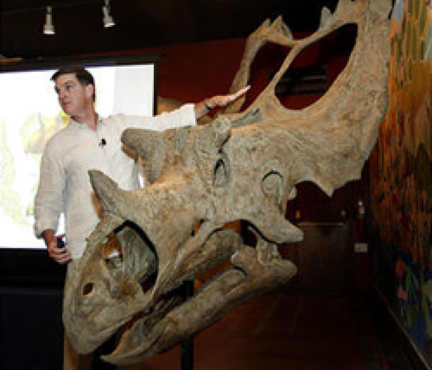

What's 75 million years old and brand spanking new? A teenage Utahceratops! Come to the Saroyan,
armed with your best dinosaur roar, when Scott Sampson, Research Curator at the Utah Museum of
Natural History, steps to the podium. Sampson's research has focused on the ecology and evolution of
late Cretaceous dinosaurs and he has conducted fieldwork in a number of countries in Africa.
Scott Sampson is a Canadian-born paleontologist who received his Ph.D. in zoology from the
University of Toronto. His doctoral work focused on two new species of ceratopsids (horned
dinosaurs) from the Late Cretaceous of Montana, as well as the growth and function of certopsid
horns and frills.
Following graduation in 1993, Sampson spent a year working at the American Museum of Natural History
in New York City, followed by five years as assistant professor of anatomy at the New York College
of Osteopathic Medicine on Long Island. He arrived at the University of Utah accepting a dual
position as assistant professor in the Department of Geology and Geophysics and curator of
vertebrate paleontology at the Utah Museum of Natural History. His research interests largely
revolve around the phylogenetics, functional morphology, and evolution of Late Cretaceous dinosaurs.
In addition to his museum and laboratory-based studies, Sampson has conducted paleontological work
in Zimbabwe, South Africa, and Madagascar, as well as the United States and Canada. He was also the
on-air host for the Discovery Channel's Dinosaur Planet and recently completed a book, Dinosaur
Odyssey: Fossil Threads in the Web of Life, which is one of the most comprehensive surveys of
dinosaurs and their worlds to date.